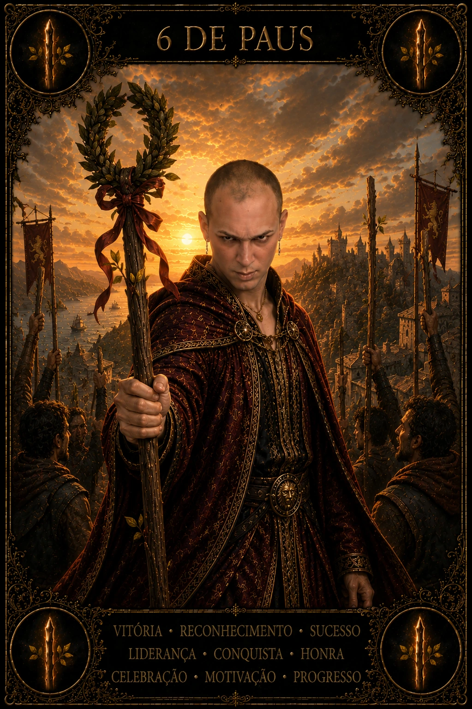

BIBLIOTECA DAS 78 CARTAS · PAUS
6 de Paus no Tarot
O 6 de Paus fala de vitória reconhecida: não apenas fazer algo bem, mas ter esse resultado visto por outras pessoas. Ele trabalha com confiança, reputação e retorno social depois de esforço. Sua camada mais profunda pergunta o que você faz com a visibilidade recebida. Reconhecimento pode fortalecer propósito, mas também pode criar dependência de aplauso se identidade e valor pessoal ficarem presos à resposta externa.
- reconhecimento
- vitória
- visibilidade
- confiança
- responsabilidade após conquista
- Arcano
- Arcano Menor
- Elemento
- Fogo
- Naipe
- Paus
- Chave
- harmonia e passagem
- Orientação
- Direta
SIGNIFICADO E ENERGIA
O que 6 de Paus revela
No dia, pode haver elogio, avanço, aprovação, resultado positivo ou chance de ocupar mais espaço. Receba o reconhecimento sem diminuí-lo e sem transformá-lo em prova de superioridade. Observe o que a conquista confirma sobre método e competência; isso é mais útil do que apenas perseguir a sensação do aplauso.
POTENCIAL
Luz
Na luz, o 6 de Paus fortalece autoestima baseada em experiência, liderança visível e capacidade de inspirar outras pessoas. Há mérito em reconhecer que um esforço funcionou. A carta favorece comunicar resultados, mostrar portfólio, celebrar progresso e usar confiança recém-conquistada para assumir responsabilidades maiores.
PONTO DE ATENÇÃO
Tensão
Na tensão, a necessidade de reconhecimento pode virar performance constante, comparação, arrogância ou medo de falhar depois de ter sido vista como vencedora. Também existe risco de atribuir toda conquista a uma pessoa quando houve contribuição coletiva. Visibilidade sem humildade pode fragilizar alianças.
VÍNCULOS E RECIPROCIDADE
6 de Paus no amor
Amor
No amor, a carta pode mostrar orgulho saudável do vínculo, demonstração pública de carinho ou sensação de ser escolhida e valorizada. O cuidado é não usar a relação como troféu nem depender de validação externa para acreditar na conexão. Reconhecimento afetivo precisa existir também no privado, em respeito e presença.
Relacionamentos
Em grupos e amizades, o 6 de Paus convida a celebrar conquistas sem criar hierarquias rígidas. Quem recebe destaque pode abrir espaço para reconhecer contribuições invisíveis. Liderança ganha legitimidade quando usa visibilidade para fortalecer o coletivo.
VIDA MATERIAL
Carreira e dinheiro
Carreira
Na carreira, é uma carta forte para promoção, aprovação, prêmio, boa apresentação, crescimento de audiência e reputação profissional. Aproveite o momento para documentar resultados e negociar com base em evidências. O próximo passo deve ser sustentado por processo, não apenas pela memória de uma vitória.
Dinheiro
No dinheiro, reconhecimento pode acompanhar aumento de renda ou oportunidade decorrente de reputação. Ainda assim, evite elevar padrão de gastos imediatamente para acompanhar uma nova imagem social. Conquista financeira se consolida quando parte do ganho vira reserva, reinvestimento ou redução de vulnerabilidade.
CAMINHO INTERIOR
Espiritualidade
Espiritualmente, o 6 de Paus ensina a receber reconhecimento sem transformá-lo em identidade absoluta. Gratidão e confiança podem coexistir com consciência de impermanência. O valor do caminho está também no que você aprende quando ninguém está aplaudindo.
LINGUAGEM VISUAL
Símbolos de 6 de Paus
- figura montada em destaque
- coroa de louros
- bastão ornamentado
- multidão acompanhando
- posição elevada e visível
LEITURA EM CONJUNTO
Combinações com 6 de Paus
Uma combinação amplia perguntas e contexto; ela não transforma possibilidade em destino.
6 de Paus + 6 de Copas
A mesma etapa encontra dois territórios: ação, desejo e criatividade dialoga com afeto, vínculo e imaginação. Observe onde uma dimensão apoia ou contradiz a outra.
6 de Paus + Os Enamorados
O padrão de 6 ganha uma chave arquetípica em Os Enamorados; a combinação amplia consciência antes de transformar símbolo em decisão.
6 de Paus + 7 de Paus
A energia de 6 de Paus aponta para 7 de Paus: identifique o aprendizado necessário para que ação, desejo e criatividade avance sem perder medida.
INTEGRAÇÃO
Desafio e conselho
Desafio
O desafio é sustentar autoconfiança quando o retorno externo oscila. Pergunte quais competências permanecem verdadeiras mesmo sem plateia. Isso protege contra a necessidade de repetir vitórias apenas para sentir valor.
Conselho
Aceite o reconhecimento e transforme-o em evidência útil. Agradeça contribuições, registre o que funcionou e escolha uma responsabilidade compatível com o próximo nível. Brilhar com integridade inclui saber dividir mérito.
PERGUNTA DE REFLEXÃO
Se o aplauso desaparecesse amanhã, que competência, valor ou resultado continuaria sendo verdade sobre o que construí?
Ação práticaRegistre uma conquista recente com três evidências objetivas do que você fez bem e agradeça de forma específica alguém cuja contribuição ajudou esse resultado.
CONTINUE A JORNADA
O Tarot é um universo de 78 vozes
Explore todas as cartas em posição direta ou abra a mesa do Tarot Livre para revelar imagens sem repetição.